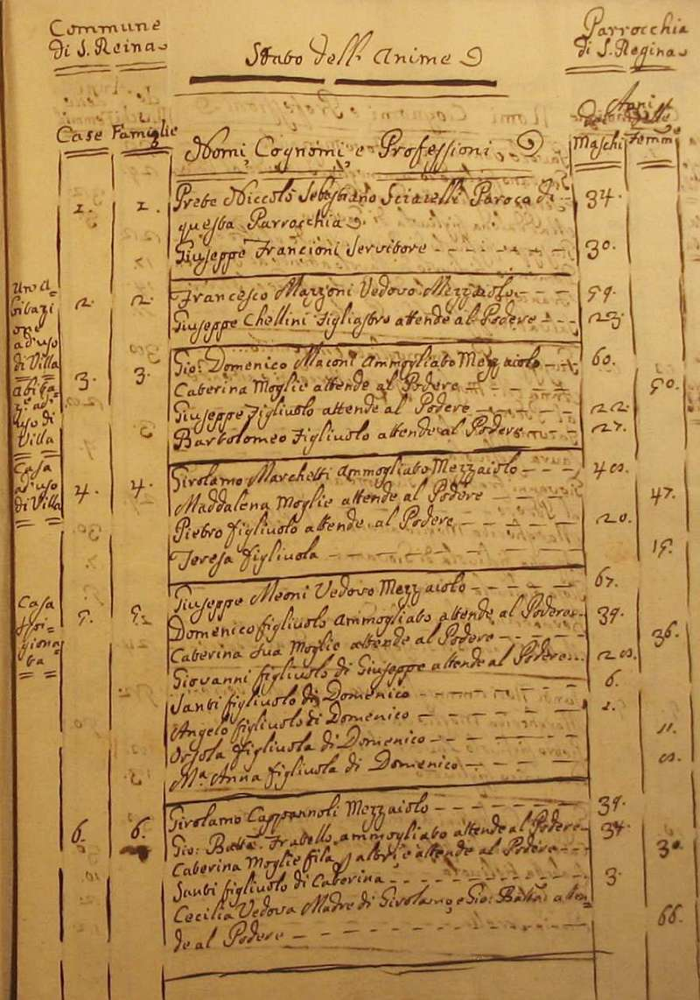
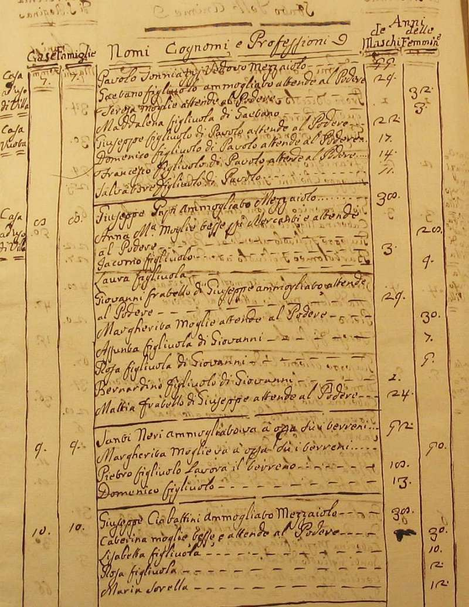
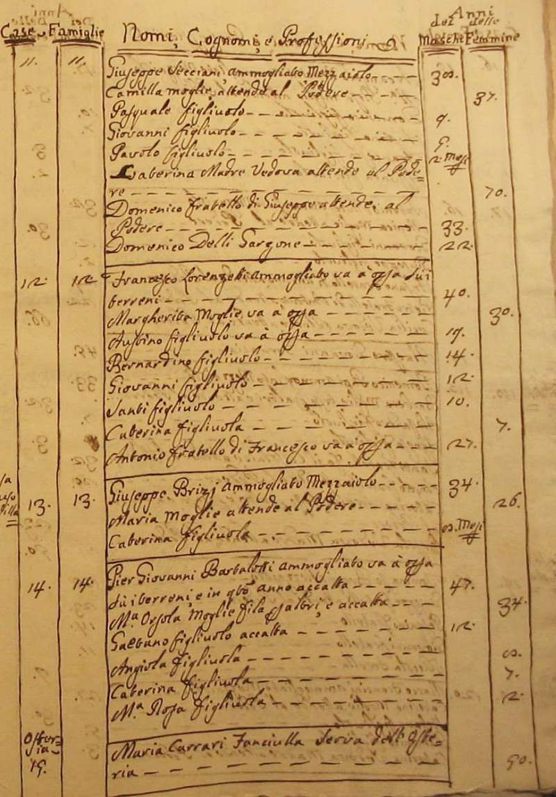
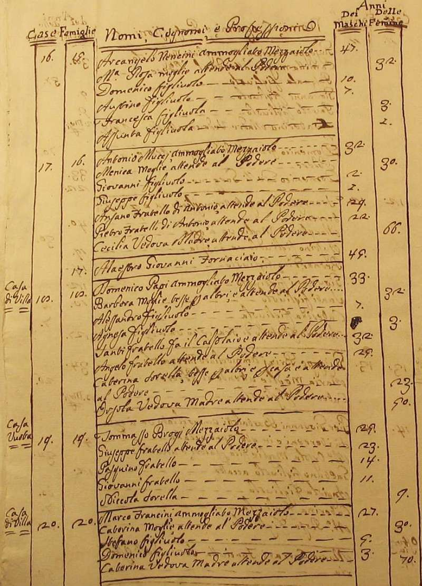
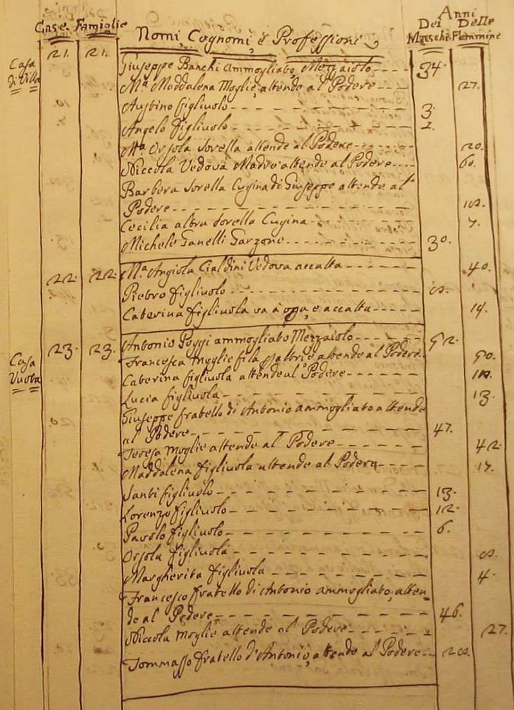
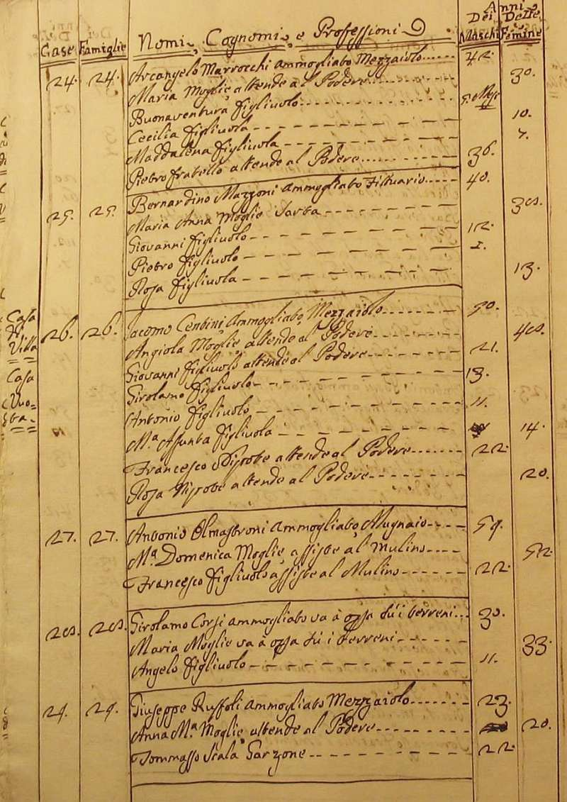
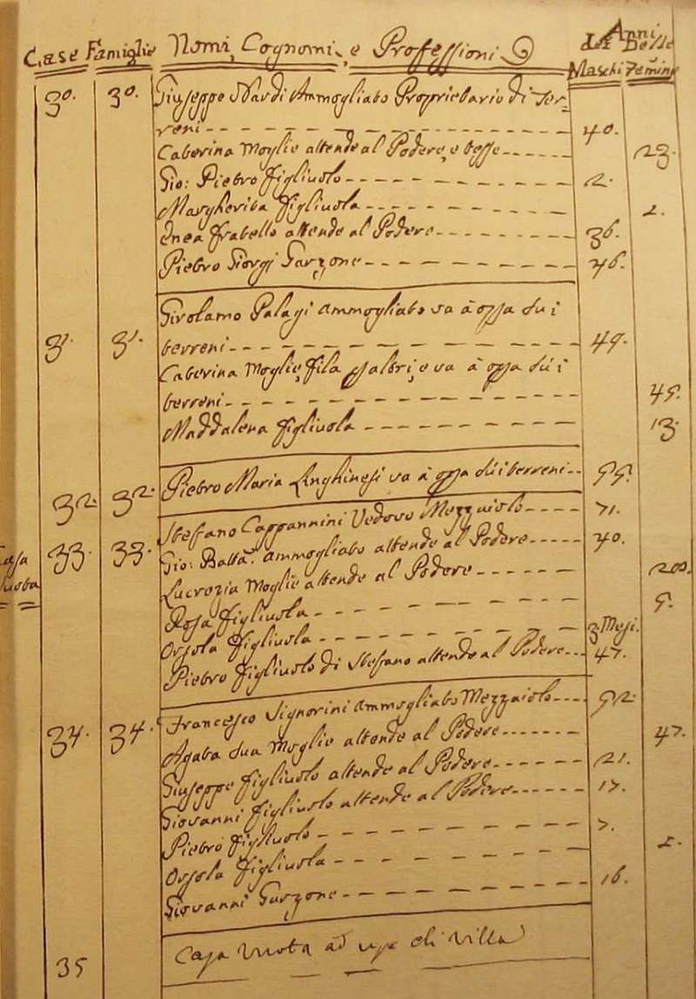

|
Ritorna all'indice delle parrocchie
Il numero abbinato ad ogni famiglia indica la relativa posizione nello Stato delle Anime
1 - Prete Niccolò Sebastiano Sciarelli
2 - Mazzoni Francesco - mezzaiolo - 2
2 - Chellini Giuseppe (figliastro di Mazzoni Francesco - attende al podere)
3 - Maconi Giovanni Domenico - mezzaiolo - 4
4 - Marchetti Girolamo - mezzaiolo
5 - Meoni Giuseppe - mezzaiolo
6 - Cappannoli Girolamo - mezzaiolo
7 - Tonniazzi Pavolo - mezzaiolo
8 - Papi Giuseppe - mezzaiolo
9 - Neri Santi - va a opera su i terreni
10 - Ciabattini Giuseppe - mezzaiolo - 5
11 - Secciani Giuseppe - mezzaiolo - 8
12 - Lorenzetti Francesco - mezzaiolo - 8
13 - Brizi Giuseppe - mezzaiolo - 3
14 - Bartalotti Pier Giovanni - va a opera su i terreni e in questo anno accatta - 6
14 - Carrari Maria - fanciulla - serva dell'osteria - 1
15 - Nencini Arcangelo - mezzaiolo
16 - Mucci Antonio - mezzaiolo - 7
17 - n. d. Giovanni - maestro fornaciaio
18 - Papi Domenico - mezzaiolo
19 - Brogi Tommasso - mezzaiolo - 5
20 - Francini Marco - mezzaiolo - 5
21 - Banchi Giuseppe - mezzaiolo - 9
22 - Cialdini M. Angiola - vedova - accatta
23 - Poggi Antonio - mezzaiolo - 15
24 - Marrocchi Arcangelo - mezzaiolo
25 - Mazzoni Bernardino - fittuario
26 - Centini Jacomo - mezzaiolo
27 - Olmastroni Antonio - mugnaio
28 - Corsi Girolamo - va a opera su i terreni
29 - Ruffoli Giuseppe - mezzaiolo
30 - Nardi Giuseppe - proprietario di terreno
31 - Palagi Girolamo - va a opera su i terreni - 3
32 - Linghinesi Pietro Maria - va a opera su i terreni - 1
33 - Cappannini Stefano - mezzaiolo
34 - Signorini Francesco - mezzaiolo







Torna ad inizio pagina
Ritorna all'indice delle parrocchie
| |

|